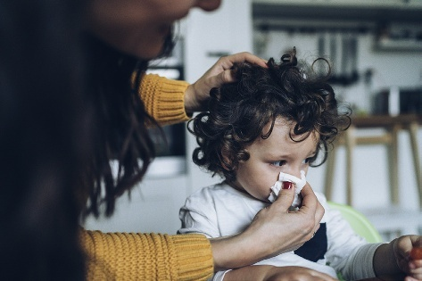

This chapter discusses the need to provide a supportive environment for the young, discusses the role of the support worker when dealing with the family, and explores some of the difficulties support workers may experience when working with children. It also offers a list of ways to deal with children who display challenging behaviours. In addition, this chapter includes the common causes for children missing school. Readers should also refer to Chapters 12, 19, 31, and 32 for information about caring for children and the ages of children at each developmental level.
本章探讨为儿童和青少年提供支持性成长环境的必要性，阐述支持工作者在与家庭互动中的专业角色，并深入剖析支持工作者在与儿童接触时可能遇到的各种实际困难。此外，本章还提供了一份应对表现出具有挑战性行为儿童的有效策略清单，并总结了导致学童缺课的最常见急性病因。读者还应参阅第 12、19、31 和 32 章，以获取有关儿童照护以及各发展阶段儿童年龄特征的详尽信息。
As a support worker, you will be expected to provide care and support to people of all ages, including the young. The young person that you are assigned to support may be a family member of your primary client (see the Supporting Jane Smith: Families as Clients box on page 1010) or may be your assigned client. Always consult your supervisor if you have questions or concerns when working with children (FIGURE 42.1).
作为一名支持工作者，你将被期望向所有年龄段的人群提供照护与支持，包括年幼群体。你被指派照料的年轻个体，可能是你主要案主的家庭成员（参见第 1010 页的《案例精析：支持简·史密斯——当整个家庭都是案主时》专栏），也可能是你直接负责的主要案主。在与儿童一起工作时，如果有任何疑问或担忧，务必立即向你的主管咨询（图 42.1）。

When providing support to the young, you must always remember that they have rights, too. Promote the priorities of support work when working with children. When dealing with both the young and their families, you must remember to follow the principles of DIPPS (Dignity, Independence, Individualized care, Privacy, Preferences, and Safety) just as you would for any other client (see the Providing Compassionate Care: Working With Children box).
在向儿童与青少年提供支持时，你必须始终铭记：他们同样享有平等的权利。在与儿童接触时，要坚决贯彻支持工作的各项核心优先原则。在面对年幼群体及其家庭时，必须牢记遵循 DIPPS 原则（尊严 Dignity、独立 Independence、个性化照护 Individualized care、隐私 Privacy、偏好 Preferences 和安全 Safety），就像对待任何成年或老年案主一样严谨（参见《提供仁爱同理照护：与儿童沟通合作的临床实践指南》专栏）。
As a support worker, your goal is to provide a stable, secure, and safe atmosphere for the family. Such an environment is very important for children who have illnesses and for those who are experiencing stress when a family member is ill.
作为一名支持工作者，你的专业目标是为案主家庭营造一个稳定、安心且安全的生活环境氛围。对于身患疾病的儿童，以及当家庭其他成员罹患重病而经历巨大心理压力的儿童而言，这样一个充满支持感的环境至关重要。
| 英文术语 / 国际音标 | 中文标准译名 | 教材权威学术释义与临床界定 |
|---|---|---|
| conjunctivitis /kənˌdʒʌŋktɪˈvaɪtɪs/ | 结膜炎（红眼病） |
An inflammation of the clear membrane that covers the white part of the eye and lines the inner surface of the eyelids. The nonmedical term is pink eye. p. 1014
覆盖在眼白表面并衬于眼睑内表面的透明薄膜（结膜）发生的炎症。非医学通俗名称为红眼病（pink eye）。（第 1014 页）
|
| ear infection /ɪər ɪnˈfɛkʃən/ | 耳部感染（中耳炎） |
See otitis media. p. 1014
参见中耳炎（otitis media）。（第 1014 页）
|
| eustachian tube /juːˈsteɪkiən tjuːb/ | 咽鼓管（耳咽管） |
The tiny drainage pipe in the middle ear. p. 1014
位于中耳微小的引流管道，连接中耳与鼻咽部，用于平衡鼓膜内外气压及引流分泌物。（第 1014 页）
|
| gastroenteritis /ˌɡæstroʊˌɛntəˈraɪtɪs/ | 胃肠炎（肠胃型感冒） |
More commonly and incorrectly known as “stomach flu,” this illness causes vomiting and diarrhea and can lead to dehydration, particularly in very young children and frail older people. p. 1014
俗称且常被误称为“肠胃型感冒”（stomach flu）。该疾病引起呕吐和腹泻，并可迅速导致严重脱水，在极年幼的儿童和身体虚弱的年长者中尤为危险。（第 1014 页）
|
| negative reinforcement /ˈnɛɡətɪv ˌriːɪnˈfɔːrsmənt/ | 负强化 |
Encouraging a behaviour by penalizing the person when that behaviour is not demonstrated. p. 1013
通过在未表现出某种行为时对个体施加惩罚/剥夺以鼓励该行为表现的方式。（第 1013 页）
|
| obesity /oʊˈbiːsəti/ | 肥胖症 |
Excess fat accumulation that puts a person’s health at risk. p. 1008
对人体健康带来严重风险的过度脂肪积聚。（第 1008 页）
|
Your responsibilities will vary in each family situation. However, the following are usually included:
你的具体工作职责会因每个家庭的实际情况而有所不同。然而，通常都会包含以下核心职责范围：
As a support worker, you are responsible for helping the child to eat well; preventing injuries, falls, burns, and accidental poisoning; and preventing infections. Caring for children in the home requires that you communicate effectively with both the child and their family. Communication with the child should be appropriate for the child’s age and developmental level.
作为一名支持工作者，你有责任帮助儿童吃好、吃出健康；全力预防各类意外伤害、跌倒、烫伤以及意外中毒；并严格预防感染的发生。在家庭环境中照护儿童，要求你必须能够与儿童及其家属进行行之有效的沟通。与儿童的沟通必须与该儿童的生理年龄和认知发育水平完全相匹配。
Before you start working with children, you should understand the environment they live in. In some cases, the child’s family situation may create a stressful working environment for you.
在开始与儿童一起工作之前，你应该深入了解他们所生活的现实环境。在某些情况下，案主儿童所处的家庭境遇可能会为你带来极具挑战性和压力重重的工作环境。
Here are a few of the many challenges that children and teens face in Canadian society today:
以下是当今年轻一代（儿童与青少年）在加拿大社会中面临的诸多现实挑战中的几个典型方面：
Adequate nutrition is critical for the proper physical and cognitive growth and development of children. Helping children develop healthy eating habits early in life sets a foundation for lifelong health and wellness. Support workers should follow Canada’s Food Guide and the client’s established care plan when preparing or serving meals and snacks (see Chapter 25).
充足均衡的营养对儿童的身体发育与大脑认知成长至关重要。在儿童幼年时期帮助其养成良好的健康饮食习惯，将为一生的身心健康奠定坚实基石。在准备或提供正餐与点心时，支持工作者应严格遵循《加拿大食品指南》（Canada’s Food Guide）和案主既定的照护计划（参见第 25 章）。
Childhood Obesity. Obesity—excess fat accumulation that puts a person’s health at risk—is a growing public health problem among Canadian children and adolescents. Childhood obesity increases the risk of serious physical conditions such as type 2 diabetes, high blood pressure, high cholesterol, asthma, sleep apnea, joint problems, and liver disease. In addition, overweight and obese children frequently suffer from low self-esteem, depression, and bullying from peers.
儿童期肥胖症。 肥胖症（Obesity）——即危及个体健康的过度脂肪积聚——正成为加拿大儿童与青少年群体中日益严峻的公共卫生危机。儿童肥胖症显著增加了罹患多种严重躯体疾病的风险，例如 2 型糖尿病、高血压、高胆固醇血症、哮喘、睡眠呼吸暂停综合征、关节受损以及脂肪肝等。此外，超重与肥胖儿童还极易遭受自尊心受创、抑郁焦虑以及同龄人的冷嘲热讽与霸凌。
Poor body image increases the risk for eating disorders among youth. By Grade 9, only 26% of Canadian girls report having high self-esteem, compared with 40% of boys. Support workers must be sensitive to cultural, language, and dietary diversity—about 13% of Canadians speak a language other than English or French at home.
不良的体象认同显著增加了青少年患摄食障碍的风险。调查显示，到了 9 年级，只有 26% 的加拿大女学生报告具有较高的自尊心，而男学生这一比例为 40%。此外，支持工作者必须对文化、语言和饮食多样性保持敏感——约有 13% 的加拿大人在家中使用英语或法语以外的语言交流。
In many households, mealtimes can become an exhausting battleground between parents and children. Children may refuse food to exert autonomy, or they may struggle with eating disorders (see Chapter 37), such as anorexia nervosa (eating too little) or bulimia nervosa (bingeing and purging).
在许多家庭中，吃饭时间很容易演变成父母与子女之间筋疲力尽的争吵战场。孩子可能会通过拒绝进食来宣示自主权，或者可能正经历着严重的摄食障碍（参见第 37 章），例如神经性厌食症（极度节食拒绝进食）或神经性贪食症（暴食后催吐）。
Adequate sleep and regular physical activity are vital for healthy growth, emotional regulation, and cognitive development. Sleep requirements vary by age: infants require 12 to 16 hours, toddlers 11 to 14 hours, preschoolers 10 to 13 hours, school-age children 9 to 11 hours, and teens 8 to 10 hours of sleep per 24-hour period. Support workers should maintain calming bedtime routines, avoid screens before bed, and ensure active play following the Canadian 24-Hour Movement Guidelines (at least 60 minutes of moderate-to-vigorous physical activity daily for children aged 5–17 years).
充足的高质量睡眠与有规律的身体活动，是促进儿童健康成长、情绪调节以及大脑发育的核心支柱。不同年龄段儿童的睡眠需求各异：婴儿每天需要 12 至 16 小时，蹒跚学步幼儿需要 11 至 14 小时，学龄前儿童需要 10 至 13 小时，学龄儿童需要 9 至 11 小时，而青少年每 24 小时周期需要 8 至 10 小时睡眠。支持工作者应协助维护平静规律的睡前作息惯例，避免睡前接触电子屏幕，并依据《加拿大 24 小时运动指南》保障每日充足的游戏与运动（5 至 17 岁青少年儿童每天至少进行 60 分钟中高强度的身体活动）。
When supervising or caring for children, you need to reinforce the rules of acceptable behaviour in the home. The system of rules that governs how we act is called discipline. Discipline is a positive way of teaching responsible behaviour. It sets limits and provides guidelines so that children can learn how to behave in an appropriate way. A support worker should never use physical force, such as spanking or pinching, at any time.
在监督或照看儿童时，你需要巩固并执行该家庭中公认的可接受行为准则。用于规范我们日常言行举止的规则体系被称为纪律（discipline）。纪律是一种教育儿童养成负责任行为的积极途径。它设定了明确的界限并提供了行动指南，从而使儿童能够逐步学会如何以恰当得体的方式处事。支持工作者在任何时候、任何情况下都绝对不得使用身体暴力或体罚，例如打屁股、掌掴或拧掐捏掐。
Discipline should be consistent. Each time a rule is broken, the consequence should be the same. For example, Noah (age 4 years) forgets to remove his boots and gets the floor dirty. He must get a cloth and help clean the floor, and he is not allowed to play until he does so. Noah knows the rules and what will happen if a rule is broken. The child feels secure when they know the caregiver’s expectations.
纪律必须保持高度的一致性（consistent）。 每次只要违反规则，所承担的后果都应当完全相同。例如，4 岁的诺亚（Noah）进屋时忘记脱靴子把地板弄脏了。他必须拿抹布帮忙把地板擦干净，而且在把地板擦干净之前不允许去玩耍。诺亚清楚家庭的规矩，也知道一旦违背规矩会有什么后果。当儿童能够清晰预期照护者的要求与后果时，他们内心会获得极大的安全感与确定性。
Recognize the child’s efforts when they try to follow the rules of the household. Praising these efforts encourages acceptable behaviour. Being positive with children is always more effective than being negative. For example, if Noah gets the floor dirty, it is better to say, “Let’s clean up the mess” than “Shame on you for making that big mess.” After he cleans up the mess, you could say, “Thank you for doing such a fine job.” This show of appreciation would help to make Noah feel good about his accomplishment. Praise and acknowledgement also promote a child’s dignity and show respect for the child.
当儿童努力尝试遵守家庭规则时，要及时肯定并认可他们的努力。赞扬这些努力能够强力鼓励正面积极的行为。对儿童采取积极的态度，永远比采取消极批评有效得多。例如，如果诺亚把地板弄脏了，说一句“我们一起把这里收拾干净吧”要比当面羞辱训斥“你搞得这么脏，真为你害臊”好得多。在他收拾干净之后，你可以真诚地说：“谢谢你把地板擦得这么干净，做得太棒了。”这种及时的赞赏会让诺亚对自己达成的成果感到自豪。由衷的表扬与认可不仅能维护儿童的尊严，更体现了对儿童人格的尊重。
Your role in disciplining the child is to:
你在协助儿童遵守纪律方面的专业职责是：
Some parents may have very few rules of discipline, or the existing rules may seem too harsh or too loose. In such a case, you should contact your supervisor. New rules may need to be set, but you should not set discipline rules without the guidance of your supervisor.
有些家庭的父母可能极少设立管教规则，或者现存的规则显得过分严苛或极端松散放任。在此类复杂情况下，你应当立即联系你的主管。虽然可能需要重新确立新的行为准则，但支持工作者绝对不得在没有主管明确指导的情况下私自擅自建立纪律规则。
Punishment is a harsh response that occurs when a discipline rule is broken. Punishing a child for failing to follow the rules of the household is not your responsibility. If a family member asks you to do so, explain that it is against your agency’s policy to carry out punishment. Ask the family member to contact your supervisor if they have further questions. Record this information, and tell your supervisor about the situation.
惩罚（Punishment） 是当纪律规则被破坏时所采取的一种粗暴严厉的负面反应。因为儿童未能遵守家庭规则而对其实施惩罚，绝对不是支持工作者的职责与权限。如果有家庭成员要求你对孩子实施惩罚，请向其礼貌而明确地解释：执行任何惩罚均严重违反你所属机构的执业政策与道德规约。请该家庭成员如果有进一步的疑问直接联系你的主管。请务必将此次沟通如实记录在工作日志中，并将具体情况完整汇报给你的主管。
Children raised in troubled environments may become troubled themselves. Children who display challenging behaviours may be verbally aggressive, resistant to rules and regulations, or have difficulty forming bonds with others.
在充满困扰和动荡的环境中抚养长大的儿童，其自身往往也会受到深深的困扰。表现出具有挑战性行为的儿童，可能具有言语攻击性、对家庭规则和日常规矩表现出强烈的抵触反抗，或者在与他人建立信任纽带方面存在显著困难。
Why Do Some Children “Act Out”? Children of all ages sometimes express their feelings of anger, frustration, fear, guilt, or shame through their behaviour because it is the only way they know how to convey what they feel. Some children display emotional or behavioural outbursts, whereas others will demonstrate that they feel overwhelmed, tired, or physically unwell. Children may behave this way if there are too many changes in their lives; if they have recently experienced painful losses; or if they have problems at school, such as difficulty learning, too much peer pressure, or experience bullying.
为什么有些孩子会出现“捣乱/发泄情绪”（Act Out）的行为？ 各个年龄段的儿童有时都会通过外在的不良行为来宣泄愤怒、沮丧、恐惧、内疚或羞耻感，因为这是他们懂得传达内心感受的唯一方式。有些儿童会表现出剧烈的情绪或行为爆发，而另一些儿童则会表现出不知所措、极度疲倦或身体不适。当儿童的生活中发生过多重大变故、最近经历了痛苦的亲人离丧，或者在学校遇到了困难（如学习障碍、过大的同伴压力或遭遇霸凌）时，他们往往就会表现出此类具有挑战性的异常行为。
Some children may have suffered or witnessed physical abuse, emotional abuse, or sexual abuse, or they may be using drugs or alcohol. In cases in which children have been hospitalized for much of their lives, they may have difficulty accepting limits, especially if their parents have tended to overindulge them, as parents are tempted to do if they think the child may die or if they feel a need to reduce their own feelings of guilt regarding the child’s illness.
有些儿童可能曾遭受或目睹过身体虐待、情感虐待或性虐待，或者他们可能正在偷偷接触毒品或酗酒。在儿童大部分生命都在医院中度过的情况下，他们往往很难接受行为约束与界限，特别是如果他们的父母倾向于过度溺爱纵容他们——当父母认为孩子可能命不久矣，或者父母感到有必要借溺爱来减轻自己对孩子患病的内疚自责时，往往极易出现这种过度纵容的情形。
It is the support worker’s responsibility to provide care in a nonjudgemental and supportive manner no matter the reason for a child “acting out.” Some ways to successfully manage a child who displays challenging behaviours are discussed in BOX 42.2.
无论儿童“发泄捣乱”的根本原因是什么，支持工作者的专业职责都是以非评判性（nonjudgemental）且充满支持关爱的方式提供照护。专栏 42.2 详细讨论了成功应对表现出具有挑战性行为儿童的实用临床策略。
When children start child care or school, it may seem as if they get sick all the time. This pattern is normal, as all children’s immune systems are developing, and their resistance to infection develops only after exposure to a multitude of germs (see Chapter 17). Young children in large groups are breeding grounds for organisms that cause illnesses. Little hands rub drippy noses and then transfer infectious agents to other children or to shared toys.
当孩子刚开始进入日托机构或学校时，看起来他们好像总是在接连不断地生病。这种现象其实是完全正常的，因为所有儿童的免疫系统都在发育过程中，他们对感染的抵抗力只有在接触了形形色色的病菌后才会逐步建立起来（参见第 17 章）。聚集在大型群体中的幼儿往往是病原微生物滋生与传播的温床。稚嫩的小手揉擦流涕的鼻子，随后又将传染源沾染到其他孩子身上或共享的玩具表面。
The single most important thing anyone can do to prevent illness is to wash their hands thoroughly and frequently. The US Centers for Disease Control and Prevention has recommended that people wash their hands with soap and warm water for 20 seconds—about as long as it takes to sing the “Happy Birthday” song twice. Alcohol-based hand sanitizers come in disposable wipes or in gel form, require no water, and help keep hands clean (see Chapter 19).
任何人为了预防疾病所能采取的最重要、最有效的措施，就是彻底且频繁地洗手。权威疾控机构建议人们使用肥皂和温水搓洗双手至少 20 秒——这大约相当于把《生日快乐》歌完整唱两遍的时间。含有酒精成分的手消毒剂（含醇免洗洗手液）有一次性湿巾或凝胶形式，无需用水，能有效协助维持手部清洁（参见第 19 章）。
Each facility generally has its own rules, but most will not let children attend school or child care if they have a fever of more than 38°C (100.4°F), are vomiting, have diarrhea, have tested positive for COVID-19, or have been in contact with a person with COVID-19. In addition, some facilities require that children with strep throat or bacterial conjunctivitis (pink eye) be on antibiotic therapy for 24 hours before returning to the classroom.
每个学校或日托机构通常都有各自的规定，但绝大多数机构都会明确禁止在出现以下情况时让儿童到校：体温超过 38°C（100.4°F）、出现呕吐、腹泻、新冠病毒检测呈阳性，或曾与确诊新冠感染者发生密切接触。此外，部分机构还严格要求：患有链球菌性咽喉炎或细菌性结膜炎（红眼病）的儿童，必须在接受规范抗生素治疗满 24 小时之后，方获准返回教室集体生活。
Positive vs. Negative Reinforcement. When teaching children, positive reinforcement—encouraging a desired behaviour by rewarding it after it is demonstrated (e.g., stickers, praise, extra playtime)—is substantially more effective than negative reinforcement (encouraging behaviour by imposing penalties or taking away privileges when the behaviour is missing). Positive reinforcement builds confidence, fosters mutual respect, and strengthens emotional security.
正强化与负强化的对比运用。 在引导儿童行为时，正强化（Positive reinforcement）——即在儿童表现出期望的行为后通过给予奖励（例如奖励贴纸、由衷称赞、增加游戏时间）来鼓励并巩固该行为——远比负强化（Negative reinforcement，即在儿童未表现出期望行为时施加剥夺或惩处）有效得多。正强化能够塑造儿童的自信心，促进彼此尊重，并筑牢心理安全感。
Time-Out Guidelines. A time-out is a brief period of quiet separation used to allow an overwhelmed or misbehaving child to calm down and regain emotional control. General clinical guidelines recommend approximately 1 minute per year of the child’s age (e.g., a 4-year-old child has a 4-minute time-out). The time-out location must be safe, quiet, free of distractions or entertainment (no screens or toys), and within the support worker’s direct line of sight. After the time-out ends, calmly discuss the behaviour, reaffirm your care, and help the child transition back to positive play.
冷静暂停（Time-Out）的规范操作指南。 冷静暂停是一种简短的情绪隔离法，旨在让情绪失控或出现不良行为的儿童暂时离开冲突环境，平复躁动并重新恢复情绪自我控制。通用的临床指南推荐：暂停时长大致为儿童每增长一岁对应 1 分钟（例如，4 岁的儿童进行 4 分钟的冷静暂停）。设置暂停的地点必须确保绝对安全、安静、没有分散注意力的娱乐元素（绝不能提供电子屏幕或玩具），且必须处于支持工作者直接视线范围内。暂停时间结束后，平静温和地与孩子交流刚才的行为原因，重申对话语和感受的关爱，并协助孩子顺畅回归积极的游戏互动中。
The most common childhood illnesses are upper respiratory infections (URIs), the medical term for viral illnesses affecting the throat, nose, and sinuses. Symptoms include runny or stuffy nose, sneezing, coughing, mild sore throat, and low-grade fever. Colds usually resolve on their own in 7 to 10 days. Treatment involves rest, plenty of fluids, and symptom relief.
儿童期最常见的疾病是上呼吸道感染（URIs），这是累及鼻腔、咽喉及鼻窦的病毒性感染的正式医学术语。临床症状包括流涕、鼻塞、打喷嚏、咳嗽、轻微喉咙痛以及低热。普通感冒通常在 7 至 10 天内自行痊愈。照护方案主要是充分休息、多饮水以及对症舒适缓解。
Gastroenteritis—incorrectly called the “stomach flu”—is an inflammation of the stomach and intestines caused by viruses (such as rotavirus or norovirus) or bacteria. It causes sudden nausea, vomiting, watery diarrhea, and cramping. CRITICAL CLINICAL DANGER: Dehydration! Young children can become dangerously dehydrated very quickly through fluid loss. Signs of dehydration include dry mouth, crying without tears, sunken eyes, extreme lethargy, and no wet diaper for over 6 hours. Report immediately!
胃肠炎（常被误称为“肠胃感冒”）是由病毒（如轮状病毒、诺如病毒）或细菌引起的胃黏膜与肠道急性炎症。它会导致突发的恶心、剧烈呕吐、水样腹泻和腹部绞痛。重大临床生命威胁：严重脱水！ 幼童因体液丢失极易迅速陷入致命的重度脱水状态。脱水关键体征包括：口干舌燥、哭泣时无眼泪、眼眶深陷凹陷、极度嗜睡萎靡，以及超过 6 小时没有湿尿布。发现上述征象必须立即紧急汇报主管！
Otitis media is an infection of the middle ear space behind the eardrum, caused by viruses or bacteria. Young children are highly susceptible because their eustachian tubes (tiny drainage pipes connecting the middle ear to the back of the throat) are shorter, narrower, and more horizontal than in adults, allowing fluids and pathogens to easily become trapped. Symptoms include ear pain, tugging or pulling at the ear, fever, crying when lying flat, and irritability.
中耳炎（Otitis media）是鼓膜后方中耳腔发生的病毒或细菌感染。年幼儿童极易罹患中耳炎，因为他们的咽鼓管（eustachian tubes，连接中耳与咽喉后壁的微小引流管道）比成年人更短、更窄且更为水平，极易导致分泌物滞留与病菌积聚。典型症状包括耳部剧烈疼痛、频繁拉扯或揪扯耳朵、发热、平躺时因中耳压力增大而大声哭闹，以及烦躁不安。
Conjunctivitis—commonly known as pink eye—is an inflammation of the transparent membrane (conjunctiva) covering the eyeball and lining the inner eyelid. It can be viral, bacterial, or allergic. Symptoms include redness, swelling, burning, itching, and yellowish or greenish discharge that crusts over the eyelashes, sealing the eyelids shut upon waking. Bacterial conjunctivitis is extremely contagious; children must remain home until on prescribed antibiotic drops for at least 24 hours.
结膜炎（俗称红眼病）是覆盖在眼球前方并衬于眼睑内面的透明结膜发生的急性炎症。病因可为病毒性、细菌性或过敏性。临床症状包括结膜充血发红、眼睑水肿、灼热、瘙痒，以及黄绿色脓性分泌物，常常在清晨醒来时结痂将眼睫毛粘结在一起导致睁眼困难。细菌性结膜炎具有极强的传染性；患儿必须居家隔离并在使用处方抗生素眼药水满 24 小时后方可返校。
Strep throat is a contagious bacterial infection caused by group A streptococci. Symptoms include sudden, severe sore throat, pain upon swallowing, fever, headache, swollen tender neck lymph nodes, and red tonsils often coated with white patches or streaks of pus. Strep throat requires physician diagnosis via throat swab and treatment with antibiotics to prevent serious complications such as rheumatic fever or kidney damage. The child must stay home until they have received antibiotics for at least 24 hours.
链球菌喉炎是由 A 族链球菌（streptococci） 引起的急性接触传染性细菌感染。典型临床特征包括突发的剧烈喉咙痛、吞咽困难剧痛、发热、头痛、颈部淋巴结肿大压痛，以及扁桃体显著充血发红且常覆有白色脓性斑点或脓栓。链球菌感染必须经由医生咽拭子培养确诊，并立即接受规范抗生素疗程，以预防风湿热（心脏瓣膜损伤）或急性肾小球肾炎等危急并发症。患儿必须服药抗生素满 24 小时方能返校。
Vaccines are so effective that most of the diseases that they help prevent have now become rare in Canada (see BOX 42.3: Recommended Childhood Immunizations in Canada). Immunization protects children from devastating and historically fatal childhood illnesses including measles, mumps, rubella, pertussis (whooping cough), diphtheria, tetanus, certain types of bacterial meningitis, and polio.
疫苗的预防效果极其卓著，以至于它们所预防的大多数凶险传染病在当今加拿大已变得极为罕见（参见专栏 42.3《加拿大国家推荐儿童免疫接种规划》）。疫苗接种保护着广大儿童免受历史上曾经造成无数残疾与死亡的灾难性小儿传染病的侵害，包括麻疹、流行性腮腺炎、风疹、百日咳、白喉、破伤风、特定类型的细菌性脑膜炎以及脊髓灰质炎（小儿麻痹症）。
How Vaccines Work. Vaccines work by imitating an infection. When a vaccine is given, it introduces weakened antigens or inactive pieces of a pathogen into the body. The body’s natural immune system recognizes these harmless components as foreign invaders and produces specific antibodies and immune memory cells without causing the disease itself. Later, if the child is exposed to the real live pathogen, their immune system immediately recognizes it and destroys it before it can cause illness.
疫苗的工作机制。 疫苗通过模拟一次无害的感染发挥作用。当注射疫苗时，它向体内引入了灭活病原体片段或减毒抗原。人体的天然免疫系统会将这些无害成分识别为外来入侵者，从而在不引发真实疾病的前提下，生成具有特异性的抗体（antibodies）与免疫记忆细胞。日后当儿童在现实中接触到真正的活体致病菌或病毒时，免疫系统便能立即将其精准消灭，在疾病发作之前将其拦截阻断。
Herd Immunity (Community Immunity). When vaccination rates are kept at high levels in the population (typically 95% or higher for highly infectious diseases like measles), the occurrence of disease is low and outbreaks are rare. This community-wide shield is known as herd immunity. Herd immunity is critical because it protects vulnerable individuals who cannot be vaccinated—such as newborn infants, people undergoing cancer chemotherapy, or those with severe immune deficiencies. Conversely, when vaccination rates drop due to vaccine hesitancy or misinformation, disease rates surge and dangerous outbreaks resurface.
群体免疫（社区免疫屏障）。 当整个人群的疫苗接种率维持在极高水平时（对于麻疹等高传染性疾病，通常需要达到 95% 或更高），疾病在社区中的发生率极低，暴发极为罕见。这种覆盖全社会的防护盾被称为群体免疫（herd immunity）。群体免疫之所以至关重要，是因为它能切实保护那些因医学原因而无法接种疫苗的极其脆弱的人群——例如刚出生的初生婴儿、正在接受肿瘤化疗的患者或严重先天性免疫缺陷者。反之，一旦接种率因疫苗犹豫或虚假信息的误导而下滑，疾病发病率就会急剧飙升，引发致命的疫情反弹。
Caring for a Sick Child at Home. When caring for a sick child, the support worker should follow the physician’s or nurse supervisor’s instructions closely. Keep the child rested, comfortable, and well-hydrated. Offer small, frequent sips of water, clear broth, diluted apple juice, or oral rehydration solutions. Keep the room quiet, well-ventilated, and comfortable. Observe and immediately report warning signs: fever over 38.5°C, stiff neck, extreme lethargy, persistent vomiting, or difficulty breathing.
病童居家舒适照护规范。 在居家环境中照料患病儿童时，支持工作者应严密遵从主治医师或主管护士的医嘱。保障患儿充分休息、处于舒适卧位并维持良好水分摄入。建议频繁少量提供温水、清淡肉汤、稀释苹果汁或口服补液盐溶液。保持居室安静、通风良好且温度适宜。密切观察并立即向主管汇报危险预警征象：体温超过 38.5°C、颈项强直强直、极度嗜睡唤不醒、持续剧烈呕吐或呼吸急促呼吸困难。
Official Elsevier Canadian 5th Edition Review Questions 1 through 11 test essential clinical knowledge regarding support worker roles, active listening, pleasant mealtimes, absolute punishment prohibition, vaccine science, common childhood school absences, and immunity maturation.
爱思唯尔加拿大第 5 版官方全真自测复习题第 1 至 11 题，全面考核支持工作者职责、积极倾听技巧、餐桌和谐环境构建、绝对禁止惩罚硬性红线、疫苗生物学机理、学童五大缺课病因及免疫成熟规律等核心执业考点。